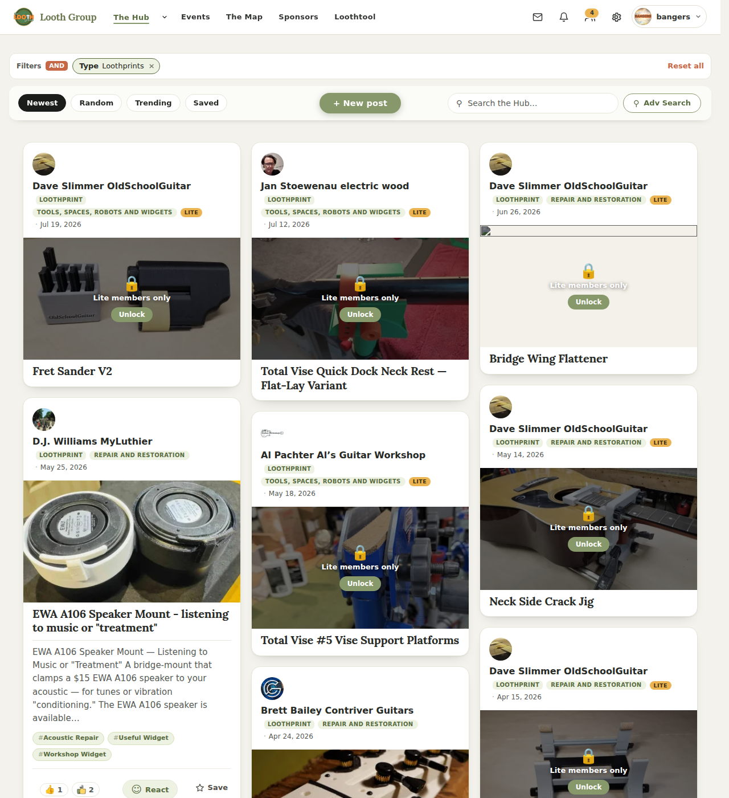
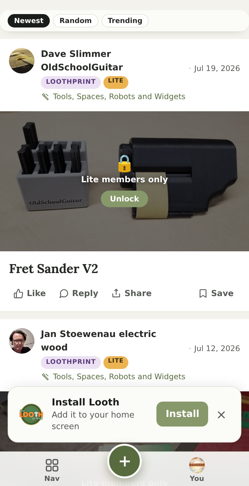

SUPERSEDED — Ian ruled 2026-08-09. He picked neither A nor B here. The entry point goes inside the hub composer as a type toggle, discussion ↔ loothprint, each rendering its own form: see the toggle mock. This page is kept only for the finding it records — that the Hub's “+ New post” button already sits above a member's Loothprints and opens a discussion — which is what the toggle fixes.
The form is built and photographed on the sibling page. This was the decision about how a member reaches it.
Your Hub already has a “+ New post” button, and when a member filters the Hub to Loothprints it is sitting right there above their Loothprints — in the right place, with the right label. It just opens a discussion.

/hub/?type=loothprint, signed in as a member.
Light theme. The filter says Type · Loothprints; the marked button says + New post.How I know what it opens: from the source, not from a
click — _feed.php:1425 renders that button with data-ntm-open,
and forums.js binds any data-ntm-open to the discussion composer.
There is no reference to the Hub’s type filter anywhere in that path. I tried to click it
to confirm behaviourally and the click would not land — a transparent chrome wrapper sits
over it in the hit-test — so I am telling you what the code says rather than claiming I
saw it happen.
The mobile “+” comes free either way.
bottom-nav.js’s centre “+” doesn’t have its own composer — it fires the same
data-ntm-open trigger. So whichever option you pick below, the phone button
inherits it without a second decision. Your 7/08 ruling that the bar stays
Nav | + | You is untouched.
On a Hub filtered to Loothprints, “+ New post” opens the Loothprint form. Everywhere else it does exactly what it does today. No new chrome, no extra tap, and nothing moves.
Filtered to Loothprints
The label says what you’ll get.
Everywhere else — unchanged
Discussion composer, exactly as today.
The one thing I don’t like about A: it is only findable if a member already thought to filter the Hub to Loothprints. Someone who has never posted one may never see it. That is the honest cost, and it is why B exists.
“+ New post” always opens a two-line chooser first. Findable from anywhere, at the cost of one extra tap on every post — including discussions, which are 386 authors a year against Loothprints’ 38.
The chooser
On a phone — the same sheet, from the “+”

Real screenshot — dark theme, and a viewport one, so the bottom bar and its “+” sit where they actually do rather than where a stitched full-page shot would put them. The sheet would rise from there, like the Hub picker.
| A — follows the filter | B — always asks | |
|---|---|---|
| Taps to post a discussion | unchanged | one more, for everyone |
| Taps to post a Loothprint | filter the Hub first, then one | one, from anywhere |
| Findable if you’ve never posted one | no | yes |
| New chrome to design and dark-pass | none | a sheet |
| Fixes “+ New post gives a discussion on a Loothprints page” | yes | yes |
| Adds a third type later (events, videos) | each needs its own filtered view | one more row |
They are not exclusive. A is a subset of B’s behaviour, so A now and B later costs nothing extra — B just replaces the branch. If you can’t decide, A is the reversible one.
Signed-out members must not be offered it. There is already an open P0 about exactly this shape — backlog 4.2, the logged-out mobile “+” implying you can post — and an entry point that repeats it would be the same bug twice. The button only renders for someone who can actually post: the server already refuses the form itself to anyone else, and that refusal is gated both ways. Nothing here changes who may post; it only changes who is shown the way in.
A or B — and if A, whether the label should read “+ Share a Loothprint” as drawn, or stay “+ New post”. That is the whole decision; the form behind it is already built and waiting behind its flag.